Granskning av samtliga 111 deklarerade states ur dumpen 2026-09-03. Bedömd mot designsystemets tre kärnprinciper, token- & komponentdisciplin, densitet, copy-röst och konsistens mellan varianter. Miniatyrerna nedan är beskurna från dumpen.
Designen håller — och håller starkt. Den heritage-identitet systemet lovar (papper, läder, koppar, Georgia-siffror) är genomförd med ovanlig disciplin, och de bästa ytorna — ceremonierna, de illustrerade momenten, matchinteraktionerna och de täta dataskärmarna — är genuint stämningsfulla utan att tappa funktion. Princip 1 ("nostalgi med ett jobb") sitter. Det som drar ner helheten är inte estetiken utan tre saker: läckande dev-artefakter, en berättelse-motor som inte följer utfallet, och ett återkommande layout-krock längst ner i Portal.
Buggar och läckor som ska bort innan något annat. De är billiga att fixa och dyra att lämna kvar.
Rå undefined läcker till användaren i kontrakt-copy — både på spelarkortet och i förläng-modalen. En saknad fallback i en datakoppling, men den skriker "prototyp" till spelaren.
Åtgärd: fallback via seasonSpanLabel(); guard som aldrig renderar "undefined"/"NaN" — lägg till i designAudit-reglerna.
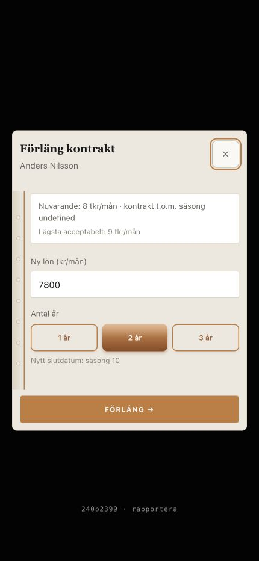
Bredvid Acceptera/Avslå i sponsor-motbudet sitter en tredje knapp märkt [Opus] — en utvecklar-/testartefakt som inte hör hemma i produkten.
Åtgärd: dölj bakom dev-flagga (samma mekanism som "rapportera"-raden är tänkt att döljas med) och lägg ett test som fångar hakparentes-etiketter.
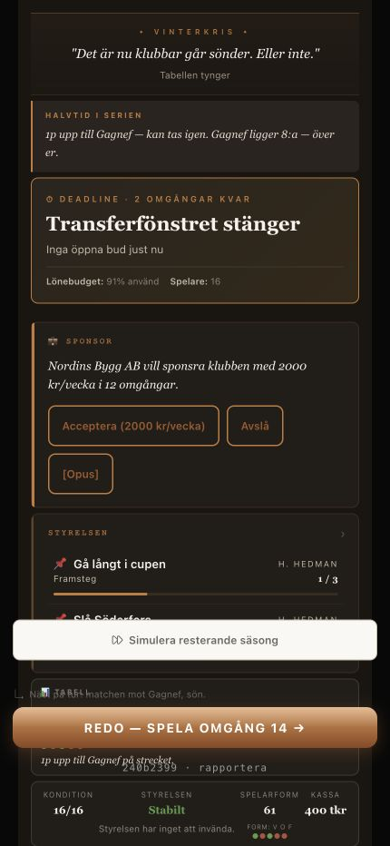
Förläng-modalen visar "Nuvarande: 8 tkr/mån" men förifyller "Ny lön (kr/mån): 7800". Två enheter i samma kort, och default (7 800 kr = 7,8 tkr) ligger under nuvarande — förlängningen börjar som en sänkning. Bud-modalen kör också kr medan resten av appen kör tkr (DS §11: löner alltid tkr/mån).
Åtgärd: en enhet överallt (tkr/mån); förifyll ≥ lägsta accepterade, aldrig under nuvarande.
På de mörka Portal-vyerna lägger sig den vita simulera-baren ovanpå fot-raden (kondition · styrelsen · spelarform · kassa + form-prickarna). Texten bakom blir oläslig, och två botten-element (bar + CTA) staplas utan luft. Återkommer på minst åtta states — en systematisk z-index/spacing-miss, inte en engångsare.
Åtgärd: ge scroll-ytan padding-bottom för bar + CTA + fot (DS: 120px räcker inte här), eller baka in simulera i CTA-stacken. designAudit/overlaps.ts borde flagga detta.
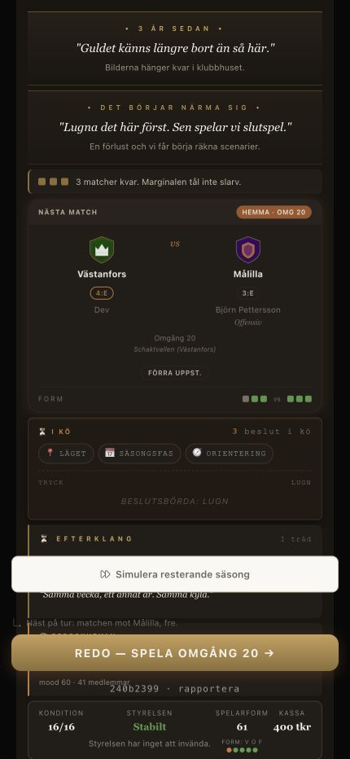
Designbeslut som skaver mot systemets egna regler eller mot spelarens förståelse.
På Granska/"Resultatet" ligger matchens 4–2 blekt (ljus koppar på papper), litet, högst upp i en nästan tom viewport. Jämför ceremonierna (001, 002, 079) där samma siffra är enorm, gyllene, på läder — och sjunger. Systemet kan hero-siffran; Granska använder inte den förmågan. Första skärmen spelaren möter efter en match är mest tomrum.
Åtgärd: en gemensam "hero-score"-behandling (Georgia 36–44, hög kontrast) som resultatet äger första vyn med; fyll resten eller centrera vertikalt.
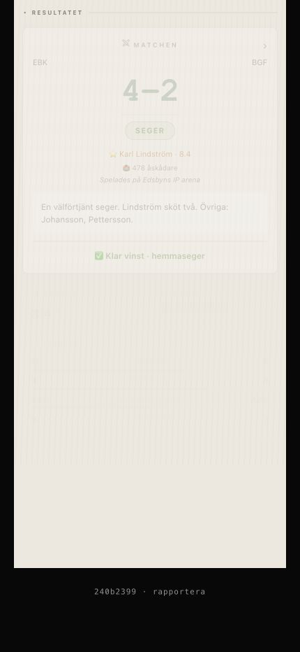
Samma begrepp renderas som naket "8"/"9" (Cupmästare 8, SM-guld 8), som "Säsong 8/9" (årsboken) och som "2026/27" (champion). DS §11 säger seasonSpanLabel() → "2026/27".
Åtgärd: en etikettfunktion, ett format. Naket ordningsnummer bara där det uttryckligen är "din N:e säsong".
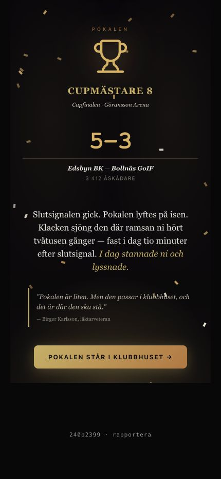
Årsbokens berättelse "En stark säsong" visas för guld (028), 8:e plats utan slutspel (029) OCH sparkad (030), och upprepas i karriärhistoriken (069). Styrelsemötena board-b (bra) och board-c (dålig) delar identisk rubrik "Vi vet rutinen nu." och brödtext — bara bock/kryss och ±40 tkr skiljer. Spelets själva löfte är narrativ; här kopplar narrativet loss från resultatet.
Åtgärd: berättelse- och styrelse-copy måste variera på utfallsband (guld / över mål / vid mål / under mål / sparkad). Detta lyfter hela spelet mer än någon pixel.
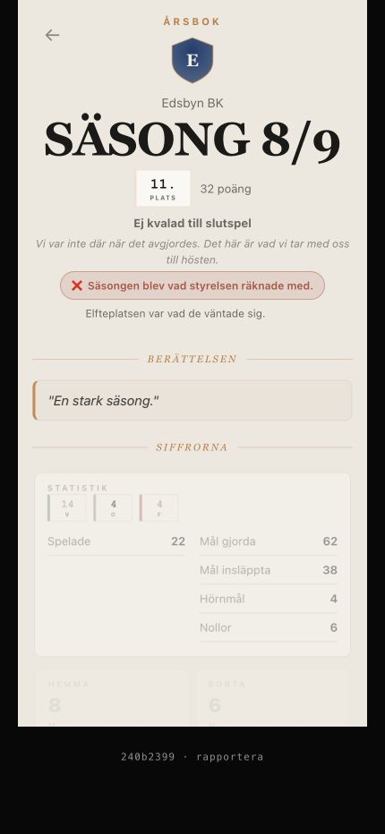
Batch-listor renderar flera fyllda kopparknappar samtidigt (tre "Acceptera" i multibids). På lönekrav (080) är dessutom den fyllda kopparknappen "Behåll nuvarande lön" medan "Möt kravet" är outline — kopparn pekar på passivitet, inte på den drivande handlingen. När allt är primary är inget det.
Åtgärd: radhandlingar som outline/secondary; reservera fylld koppar för skärmens ena avslutande CTA. Låt inte "behåll" bära primary-vikten.
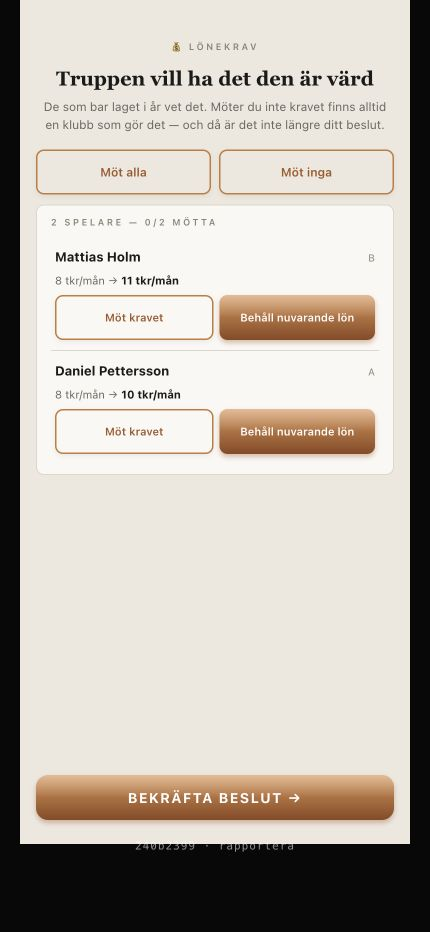
Hörna, kontring och frislag har alla kopparfärgad CTA. Straffen (103) har en klarröd "Skjut straffen". Rött är systemets fara-signal — här läser det som "fara" snarare än "största chansen", och bryter mot en annars mönstergill matchpanel-familj.
Åtgärd: antingen koppar som syskonen, eller gör "högtrycks-skott" till ett medvetet, dokumenterat undantag i DS (inte en engångsröd knapp).
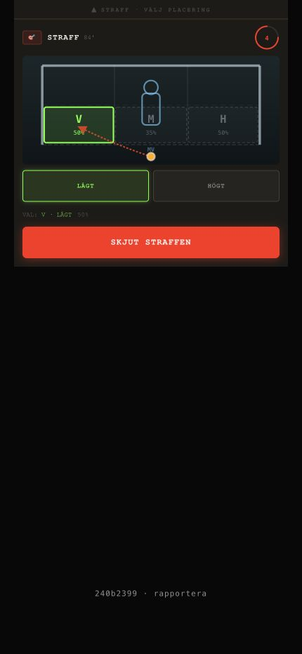
På tränarprofilen har både "Rivalitet" och "Nemesis" exakt samma klubb och facit (Bollnäs GoIF · 3V 20 4F). Två sektioner, samma data — läser som en dubbelrendering eller en oklar begreppsuppdelning.
Åtgärd: slå ihop, eller gör skillnaden tydlig (rivalitet = orten/derby, nemesis = laget du oftast förlorar mot).
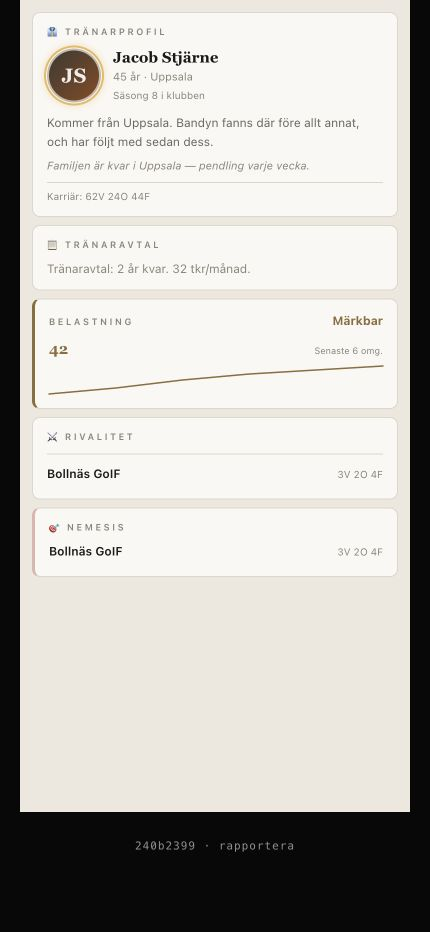
DS specar sex flikar (Hem · Trupp · Match · Tabell · Transfers · Klubb). Bygget-vyn visar sju: Hem · Trupp · Match · Tabell · Bygget · Klubb · Värvning — och "Transfers" verkar ersatt. Sju träffytor på 430px blir trångt och specen stämmer inte med bygget.
Åtgärd: bekräfta avsedd navuppsättning och uppdatera antingen DS eller koden så de talar samma språk.
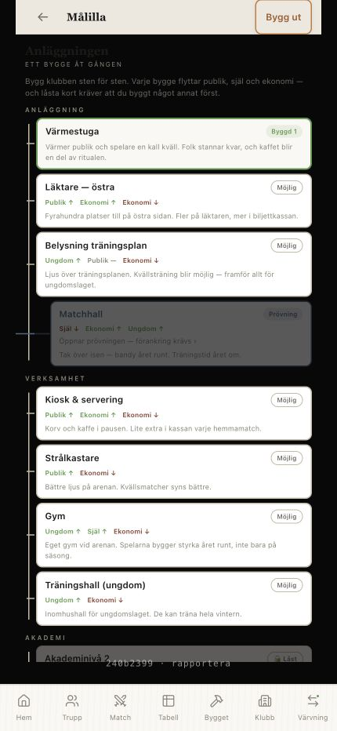
Raderna "EFTERKLANG / BUDGETKRISEN" upprepas med identisk vikt och form nedför hela vyn. Ingen hierarki, inget som säger vad som är nytt eller viktigt — svårt att skanna, och den fina journalist-idén drunknar i repetition.
Åtgärd: gruppera per tråd/tema, tona ned upprepade etiketter, lyft senaste/olästa. Låt en rad se annorlunda ut när den bär något.
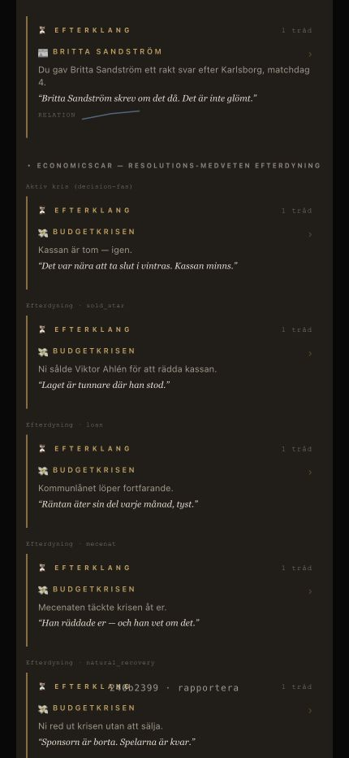
Finlir. Inget som blockerar, men som skiljer "bra" från "omsorgsfullt".
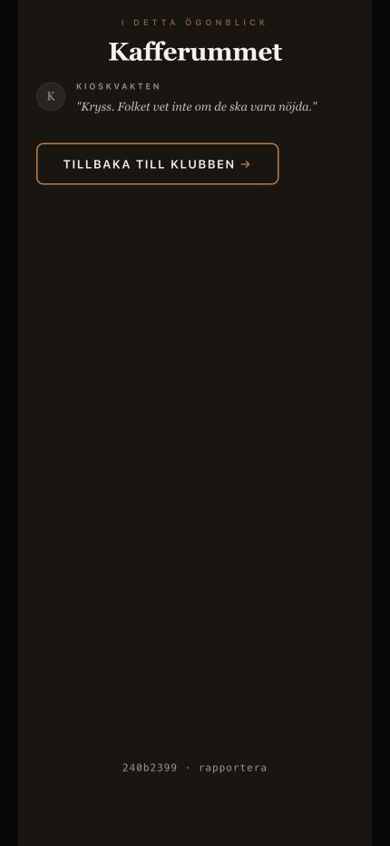
Kafferummet, cupintro, hallprövning, styrelsens ultimatum och mecenatmiddagen är ett citat + en knapp i ett stort svart fält. Meningen är kontemplation, men i det här extremläget ser det ofärdigt ut. En svag vinjett/textur, en ort- eller datumstämpel, eller stram vertikal centrering gör att de läser som komponerad stillhet.
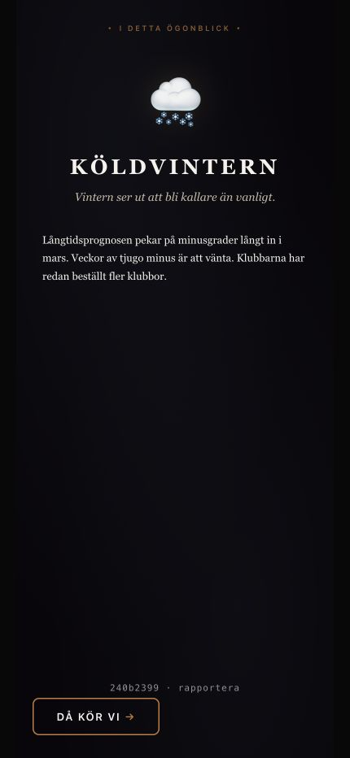
"Köldvintern" toppas av en stor moln-emoji. DS: emoji = kategorier, aldrig dekor. En liten illustrerad scen eller ett Lucide-motiv skulle bära momentet tyngre och mer på-brief.
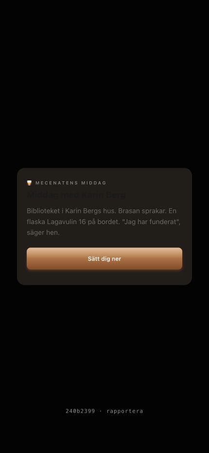
"Mecenatens middag" ser ut att renderas två gånger (en blek bakom kortets). Verifiera — troligen en överlappande rubrik/överskrift.
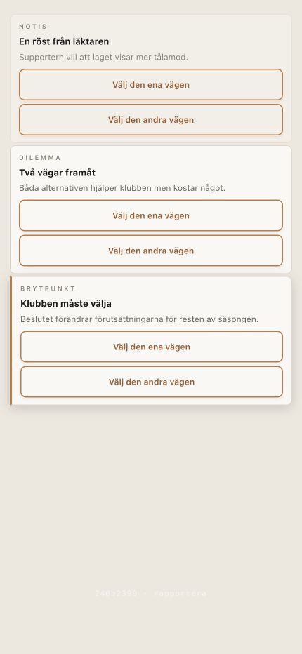
Notis/dilemma/brytpunkt eskalerar fint via vänsterstripen, men knapparna ser identiska ut i alla tre lägen. Den allvarligaste (brytpunkt) borde bära lite mer tyngd även i knappen. Knapp-copyn "Välj den ena/andra vägen" är dessutom generisk — bör vara konkreta val.
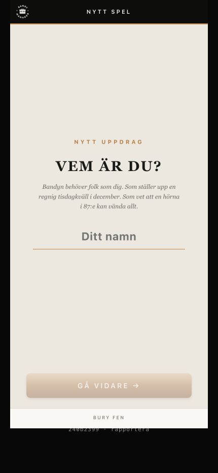
CTA:n på namn-steget läser som en urvattnad rosa snarare än kopparens CTA-gradient. Verifiera att den använder rätt token (den ska matcha t.ex. "Visa mig" på tillträdet).
Rör inte. Detta är vad resten ska hålla samma nivå som.
001, 002, 037, 079, 092, 093, 109 — läder, koppar, Georgia-siffror och de målade scenerna levererar precis den "nostalgi med ett jobb" systemet lovar.
102, 104, 105 — plandiagram med %-zoner, tydligt valt läge, dockad panel. Appens mest distinkta och funktionella yta. (Straffen bryter bara på CTA-färgen.)
027 tabell (med legend!), 077/078 slutspelsträd, 091 scouting, 020 ekonomi, 006/043/044 trupp — "tight, not airy" utan att bli rörigt. Form-prickar och taggar jobbar.
031 "Marknaden är tom" talar; 045 CTA disabled tills elvan är fylld; 082 inkorg pekar rätt ("Resultat bor i Granska"). Regel 12 respekteras.
074 svårighetstaggar, 087 relationsbar + historik, 062/063 sommar-varianter, 065 halvvägs-val. Genomtänkta mönster — de behöver bara koppla hårdare till utfall (se D3).
Mörk header med kopparstreck, footer, CTA-språk ("REDO — SPELA OMGÅNG N →") och fas-logik känns igen tvärs över floran. Systemet är ett system.
Granskning av 111 states · dump 2026-09-03 · bedömd mot Bandy Manager Design System.